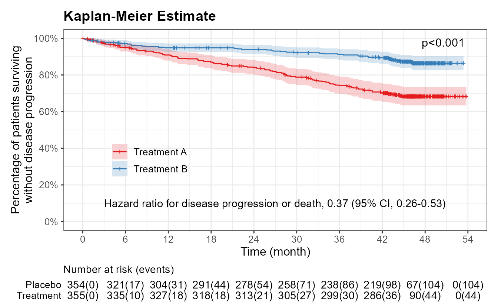

# 加载必要的包
library(tidyverse)
library(survival)
library(ggsurvfit)
library(scales)1 生存分析可视化升级｜零基础 R 绘制顶刊级 KM 生存曲线
Kaplan-Meier（KM）生存曲线是临床研究中使用率最高的统计图表之一，但很多小伙伴在绘图时，总会遇到各种棘手的问题：
传统软件生成的图精细度有限，往往难以满足期刊的要求；
对统计原理的理解不够深入，容易出现逻辑、统计方法误用的问题；
尝试自己用R绘制生存曲线，却发现网上搜到的代码版本老旧、片段零散，难以使用…
为解决KM生存曲线绘图的难题，我们从核心概念、工具和实例三方面详细介绍，即使是零基础也能轻松绘制顶刊级生存曲线。
1.1 生存曲线中的核心概念
为避免统计和绘图出现错误，首先要深入理解KM生存分析的三个核心概念：
- 结局事件（Event）
生存分析的结局事件不局限于患者死亡，临床研究中复发、疾病进展等均可定义为终点结局。通常用1代表发生结局事件，0代表未发生事件或删失。
- 删失数据（Censored）
研究随访过程中，部分受试者因失访、主动退出研究、随访截止仍未发生结局等原因，无法观测到终点事件，这类数据即为删失数据。
KM生存曲线的核心优势就在于可以妥善处理删失数据，最大限度保留原始样本信息，规避数据浪费和统计偏倚，让分析结果更真实可靠。KM曲线上的阶梯下降，代表有受试者发生了结局事件；图中的删失标记（通常用“+”表示）代表删失个体，此时曲线阶梯不下降。
- Log-rank 检验（对数秩检验）
KM生存分析通过Log-rank检验比较组间是否存在统计学差异。其原理是在每个发生终点事件的时间点确定当前的风险集（也就是到这一刻还没有出现结局事件、也没有失访，依然有可能发生目标结局的受试者），计算出各组实际发生事件数 O 和假设组间无差异时的理论期望事件数 E。汇总所有时间点的信息，结合风险集计算的方差 V 得出卡方统计量，然后利用卡方分布得到 P 值。
\[\chi^2 = \dfrac{(O_1 - E_1)^2}{V}\]
KM曲线本身无法获得HR值及其置信区间，若需要HR值，可使用Cox比例风险模型来计算。
1.2 为什么选择ggsurvfit包绘制KM生存曲线？
与传统统计软件相比，R语言能够实现高度灵活的可视化调整，生成符合期刊要求的高质量图。目前survival+survminer包是绘制KM曲线的主流，一键出图，简洁美观，但它的问题在于和ggplot2兼容性差，细节调整不够灵活。我们也可以直接使用ggplot2基础函数绘图，但过程相对复杂。
ggsurvfit包可以很好地解决了这一问题，它完全基于ggplot2语法，代码简洁优雅，专门绘制KM生存曲线、累积发生率曲线，细节调整更加地灵活。
一般情况下，我们可以用survival+survminer进行探索性的分析，最终出图则使用ggsurvfit包。
1.3 生存曲线实例
本例将用到的packages如下:
本例用到的模拟数据df如Table 1.1所示，包括709名患者的随访时间（month）、是否发生结局事件（event）和分组（group），绘制生存曲线将用到以上3个变量。数据中还包括了sex, age_group, race等变量，在以后的cox回归分析中可以作为协变量纳入模型。
| new_id | group | month | event | sex | age_group | race | iss_stage | myeloma_type | cytogenetic_risk | ecog_score |
|---|---|---|---|---|---|---|---|---|---|---|
| A000 | Treatment | 1.76 | 1 | Male | ≥65-year | White | II | NA | High | 0 |
| A001 | Treatment | 2.09 | 1 | Female | ≥65-year | White | II | IgG | Standard | 0 |
| A002 | Treatment | 0.57 | 1 | Male | ≥65-year | White | I | Non-IgG | Standard | ≥1 |
| A003 | Treatment | 0.14 | 1 | Male | <65-year | White | I | IgG | Standard | 0 |
| A004 | Treatment | 0.62 | 1 | Male | ≥65-year | White | II | NA | Standard | ≥1 |
| A005 | Treatment | 0.33 | 1 | Male | <65-year | White | I | Non-IgG | High | ≥1 |
| A006 | Treatment | 2.18 | 1 | Female | <65-year | White | I | IgG | Standard | 0 |
| A007 | Treatment | 2.04 | 0 | Male | <65-year | White | I | Non-IgG | High | 0 |
| A008 | Treatment | 1.43 | 0 | Female | <65-year | White | II | IgG | Standard | ≥1 |
| A009 | Treatment | 1.35 | 0 | Female | <65-year | White | I | Non-IgG | High | 0 |
用ggsurvfit包中的survfit2函数拟合模型，同时我们还可以用coxph函数获得获得风险比HR及相应的置信区间（经计算得到HR 0.37, 95% CI 0.26-0.53），将在生存曲线图中进行标注。
fit <- survfit2(Surv(month, event) ~ group, data = df)
hr <- df |>
mutate(group = relevel(factor(group), ref = "Placebo")) |>
(\(x) coxph(Surv(month, event) ~ group, data = x))() |>
summary()
hr$conf.int exp(coef) exp(-coef) lower .95 upper .95
groupTreatment 0.3703918 2.699843 0.2602875 0.5270714用ggsurvfit函数绘制KM生存曲线，如Figure 1.1所示。
p <- fit |> ggsurvfit() +
add_confidence_interval(alpha = 0.2) +
add_pvalue("annotation", size = 12 * 0.35) +
add_censor_mark(size = 0.8) +
add_risktable(
times = seq(0, 54, 6),
risktable_stats = "{n.risk}({cum.event})",
risktable_group = "risktable_stats",
stats_label = "Number at risk (events)",
combine_groups = FALSE,
size = 11 * 0.35,
theme = list(
theme_risktable_default(),
theme(text = element_text(size = 12))
)
) +
scale_color_manual(values = brewer.pal(9, "Set1"), labels = c("Treatment A", "Treatment B")) +
scale_fill_manual(values = brewer.pal(9, "Set1"), labels = c("Treatment A", "Treatment B")) +
scale_x_continuous(breaks = seq(0, 54, 6), expand = c(0.05, 0)) +
scale_y_continuous(labels = label_percent(), breaks = seq(0, 1, 0.2)) +
coord_cartesian(xlim = c(0, 54), ylim = c(0, 1)) +
labs(
title = "Kaplan-Meier Estimate",
x = "Time (month)",
y = "Percentage of patients surviving\nwithout disease progression"
) +
theme_ggsurvfit_default() +
theme(
text = element_text(size = 12),
plot.title = element_text(face = "bold"),
legend.position = c(0.1, 0.35),
legend.justification = "left",
legend.background = element_blank(),
axis.title.y.left = element_text(margin = margin(r = -18))
) +
annotate(
geom = "text",
x = 3,
y = 0.1,
label = "Hazard ratio for disease progression or death, 0.37 (95% CI, 0.26-0.53)",
hjust = 0,
size = 11 * 0.35
)
print(p)
add_*()是发挥核心功能的函数，同时我们进行了大量的个体化调整，包括字体、字号、图例位置、坐标轴范围、风险表的统计指标等，最终生成了美观的高质量KM生存曲线。前文中计算得出的HR值及置信区间也已经在图中标注出来了。